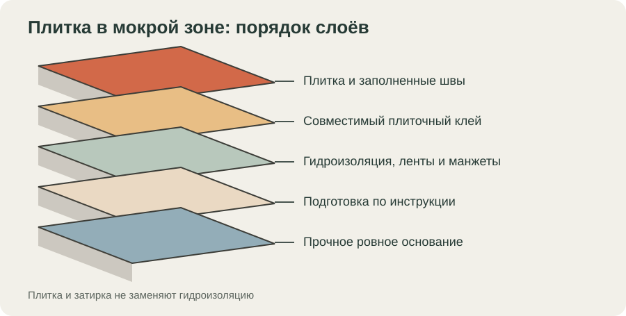

Шпатлёвка: стартовая и финишная
Виды шпатлёвок и порядок работ.
Шпатлёвка (шпаклёвка) — смесь для тонкослойного выравнивания поверхности перед покраской или поклейкой обоев.
Стартовая шпатлёвка имеет крупный наполнитель и наносится слоем до 10–20 мм для заделки неровностей и швов гипсокартона. Финишная шпатлёвка — мелкодисперсная, слоем 0,5–2 мм, образует гладкую поверхность.
По вяжущему различают гипсовые (для сухих помещений), цементные (для влажных помещений и фасадов) и полимерные готовые шпатлёвки в ведрах.
Порядок работ: грунтование, стартовый слой с армирующей сеткой на проблемных местах, шлифование, грунтование, финишный слой, шлифование абразивной сеткой P180–P240 и повторное грунтование перед покраской.
Главное за минуту
- Шпатлёвка (шпаклёвка) — смесь для тонкослойного выравнивания поверхности перед покраской или поклейкой обоев.
- Стартовая шпатлёвка имеет крупный наполнитель и наносится слоем до 10–20 мм для заделки неровностей и швов гипсокартона.
- По вяжущему различают гипсовые (для сухих помещений), цементные (для влажных помещений и фасадов) и полимерные готовые шпатлёвки в ведрах.

Проверить перед работой
- Проверьте прочность, ровность и влажность основания.
- Подберите совместимые грунт, выравнивание, защиту и финишное покрытие.
- Соблюдайте толщину слоёв и выдержки из технических листов.
Частые ошибки
- Пытаться укрепить осыпающуюся стену одним слоем грунта.
- Путать время жизни раствора с открытым временем на стене.
Источники и изображения
Под плиткой: прочное основание, подготовка, гидроизоляция в мокрой зоне, совместимый клей и облицовка. · Редакция ctroimir · Источник изображения · Авторская учебная схема